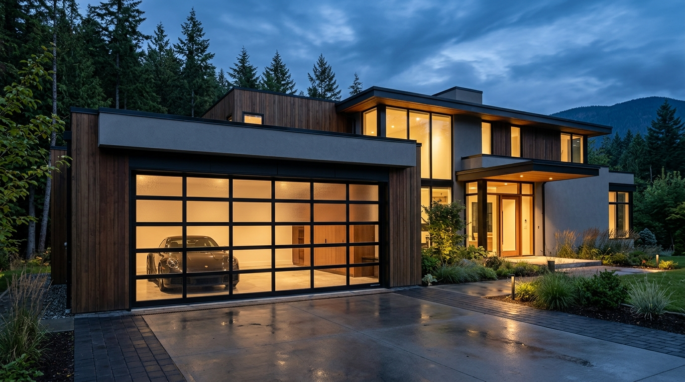

All-Glass / Full-View Garage Doors Winnipeg
Dramatic architectural aesthetics designed to flood your garage, studio, or living space with natural light. Built with heavy-duty aluminum framing, tempered glass, and commercial double torsion springs right in Winnipeg.
Who All-Glass Garage Doors Are For
All-glass and full-view garage doors are the premier choice for contemporary homes, luxury car collectors, home gym conversions, and indoor-outdoor entertainment rooms in Winnipeg. By combining high-strength extruded aluminum rails with full-width glass lites, these doors eliminate the dark, cave-like atmosphere of traditional garages.
Whether you desire crystal clear transparency for a vehicle showroom or frosted/tinted glass for privacy from the street, Maxon Doors custom-builds your full-view door directly in Winnipeg to exact rough opening measurements.

Maxon Full-View Series
Black Anodized Frame • Tempered Glass Panels
Features of Maxon Full-View Glass Doors
Engineered for strength, security, and smooth year-round operation in Manitoba:
Heavy Extruded Aluminum Framework
Constructed with commercial-grade extruded aluminum stiles and rails that will never rust, rot, or degrade under moisture or humidity.
Tempered Safety Glass
Standard with impact-resistant tempered safety glass. Options include clear, satin frosted, dark bronze tint, and insulated glass units.
Double Torsion Spring System
Glass garage doors carry substantial weight. Maxon Doors pairs every glass door with a custom-calculated double torsion spring system to balance the load effortlessly.
Architectural Anodized & Powder Finishes
Available in sleek matte black, dark bronze, clear anodized aluminum, and custom architectural powder-coat finishes.
Custom Widths & Heights
Manufactured to standard sizes (9x7, 9x8, 16x7, 16x8, 18x8) as well as custom rough openings in our Winnipeg facility.
Interlocking Weather Seals
EPDM rubber seals between horizontal glass sections and along jamb perimeters prevent air infiltration and water leaks.
Is a Full-View Glass Door Right for You?
Compare key factors between All-Glass doors and Flush insulated doors:
| Factor | All-Glass / Full-View Door | Flush Steel Door |
|---|---|---|
| Daylight & Visibility | Maximum natural light; interior visibility or privacy via frosted glass | Zero light; complete 100% solid visual privacy |
| Insulation | Insulated glass unit options available for Canadian climate | R-17.4 continuous polyurethane foam core |
| Best For | Modern showrooms, gyms, architectural curb appeal, patio rooms | Attached heated garages, workshops, maximum thermal retention |
| Spring System | Double torsion springs (commercial-rated) | Double torsion springs (commercial-rated) |
| Supply & Custom Sizing | Supplied & custom sized in Winnipeg by Maxon Doors | Supplied & custom sized in Winnipeg by Maxon Doors |
Get a Quote on All-Glass Garage Doors in Winnipeg
Connect directly with Maxon Doors at 50 Mandalay Drive. We provide accurate quotes for custom glass configurations and standard residential openings.